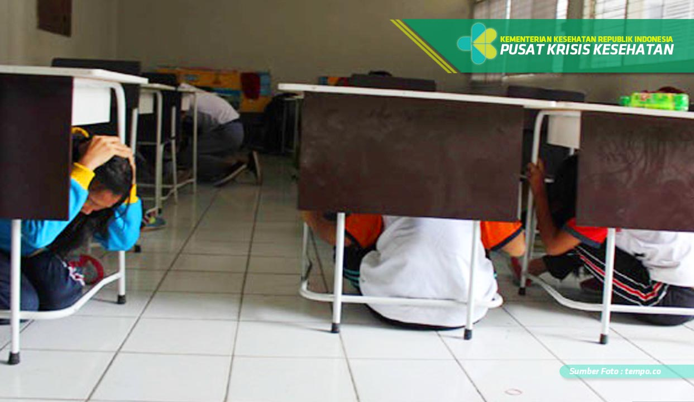

Mengurangi Resiko Bencana Gempa Bumi
-
Didalam ruangan:
- Matikan listrik dan gas apabila dalam keadaan menyala
- Segera berlindung dibawah meja,dan lindungi kepala dengan tangan
- Apabila tidak ada meja menunduklah ditengah ruangan, untuk menghindari jatuhan benda
- Berpeganganlah didalam ruangan hingga gempa berhenti
- Jangan menggunakan lift
- Keluar ruangan ketika getaran berakhir dengan berhati-hati
-
Diluar ruangan:
- Berhenti bergerak dan duduk berlindung hingga gempa berhenti
- Hindari tiang listrik, papan reklame atau benda-benda lain yang mungkin tumbang
- Apabila tidak ada meja menunduklah ditengah ruangan, untuk menghindari jatuhan benda
- Jangan berlari-lari ketika gempa
-
Didalam kendaraan:
- Pinggirkan dan hentikan kendaraan
- Apabila kendaraan berada dilokasi aman tunggu didalam kendaraan hingga gempa berhenti
- Kembali berkendara dengan waspada
-
Digunung atau pantai:
- Hati-hati terhadap kemungkinan longsor atau tsunami
- Segera mengungsi ketempat yang aman
-
Terjebak dalam reruntuhan:
- Jangan menyalahkan korek untuk menghindari kebocoran gas
- Jangan bergerak gegabah
- Tutup mulut dengan pakaian atau tangan
- Gunakan peluit atau ketuk reruntuhan untuk menghindari hirupan debu
Yang harus dilakukan setelah gempa bumi adalah sebagai berikut :
- Setelah gempa berhenti pastikan keadaan aman sebelum keluar dari bangunan.
- Waspada terhadap gempa susulan yang memungkinkan terjadi lagi.
- Waspada terhadap kebocoran gas atau percikan api.
- Perhatikan kondisi reruntuhan sekitar anda.
- Apabila akan kembali kerumah perhatikan dengan sungguh-sungguh kerusakan bangunan rumah akibat gempa.
- Terus ikuti atau pantau perkembangan informasi pasca gempa disekitar anda.